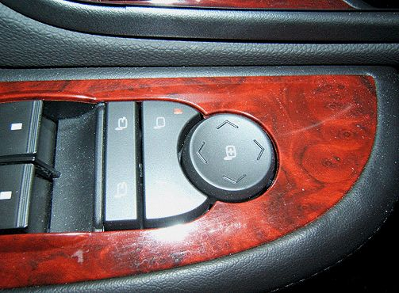

Instruments - Outside Mirror Adjustment Information
INFORMATIONBulletin No.: 09-08-64-003A
Date: June 15, 2010
Subject: Information on Adjusting Outside Rearview Mirrors
Models:
2007-2011 Cadillac Escalade, Escalade ESV, Escalade EXT
2007-2011 Chevrolet Avalanche, Silverado, Suburban, Tahoe
2007-2011 GMC Sierra, Yukon, Yukon XL, Yukon Denali, Yukon Denali XL
Supercede:
This bulletin is being revised to add the 2010 and 2011 model year. Please discard Corporate Bulletin Number 09-08-64-003 (Section 08 - Body and Accessories).
Customer Concern
Some customers may comment that the left and right outside rearview irrors do not function in all directions. With the aid of vehicle owner input, General Motors has determined that the comments are being received from owners of the previous generation of full-size truck based vehicles (1999-2006). The current generation of truck based vehicles is designed and manufactured with power mirrors that move in an up-down and left-right direction. The previous generation of vehicles had mirrors that moved in an up-down and left-right direction, and they were also able to move in a diagonal direction. Vehicle owners with previous generation vehicle experience are commenting to their dealer service department that the mirrors are not functioning as expected.
Owner Information

Explain and demonstrate to the customer that the current vehicle is equipped with the up-down and left-right style of control switch as described in the owner's manual. The mirror operation is described in the owner's manual. Refer to Features and Controls-Mirrors-Outside Power Mirrors.

Disclaimer